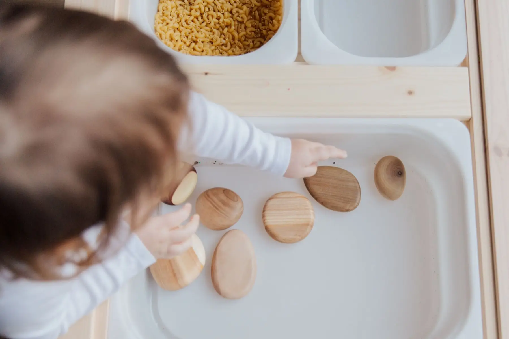

Every class is taught the Montessori way inside the British EYFS framework, in Arabic and English, and runs the same at Al Khan, Al Khalidiya and Al Jazzat.
1½ – 2½years old
Nursery & Playschool
A warm, gentle start to nursery life. The youngest children settle in through sensory play, songs and stories, and a simple routine they quickly learn to count on.
Teachers keep groups small so every child gets noticed, and we take it at your child's pace in the first weeks.
Montessori and EYFS together, in small groups with dedicated learning corners. This is where letters, sounds and numbers start, always with real materials in their hands.
Children work in the Montessori lab every day and take on small STEAM projects with their class.
Full-day, half-day and extended hours, built around working parents. Drop-off starts at 7:00am with staff on hand, class runs 8:30 to 12:00, and daycare carries on until 2:00pm.
The afternoon is calmer: lunch, rest and play, with nap times for the youngest.
Transport. Air-conditioned buses with a supervisor on board, to and from set areas of Sharjah. Ask your branch whether your area is covered.
Nurse. A clinic room and a nurse on the team, and teachers trained in first aid, fire safety and hygiene.
Speech therapy. A speech therapist supports children who need a little extra help with their first words.
Summer camp. At Al Khalidiya: crafts, science and STEAM experiments, stories and outdoor games.
The curriculum
Montessori is the heart of it: Dr Maria Montessori opened her first children's house in Rome in 1907, and her method is now used in more than 100 countries. We combine it with EYFS and STEAM. The five areas:

Practical life
Activities that help children deal with day-to-day life: pouring, dressing, tidying, caring for plants. Meaningful tasks that build independence.
Sensorial
Exercises for every quality the senses can tell apart: size, shape, texture, loud and soft, matching, temperature. They refine fine motor skills and hand-to-eye coordination, and teach children to order and classify.
Language
Clear speech and new words first, then linking sounds to letters, and step by step on to reading and writing.
Numeracy
Maths is all around a child from day one. Working with real objects, children connect each number to its quantity.
Cultural & social
Nature, science, art and music, in a class community where each child brings their own personality.
Fees depend on your child's age and schedule, with part-time and full-time options, and are broadly similar across the three branches. Call or WhatsApp your nearest branch for the current breakdown.
What age do you take children from?
From 1½ years up to 4. The preschool programme is for ages 2 to 4.
When can my child start?
Admissions are open all year, with the main intakes in September and March.
Which documents do I need?
Usually the birth certificate, passport or Emirates ID copies and the vaccination record. Your branch will confirm anything else.
Can my child move to another branch later?
Yes. All three branches follow the same curriculum, so if you move within Sharjah your child can switch with little disruption.
Not sure which class fits?
Tell us your child's age and where you live. We'll suggest the class and the closest branch.